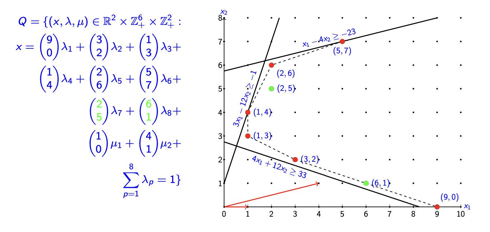
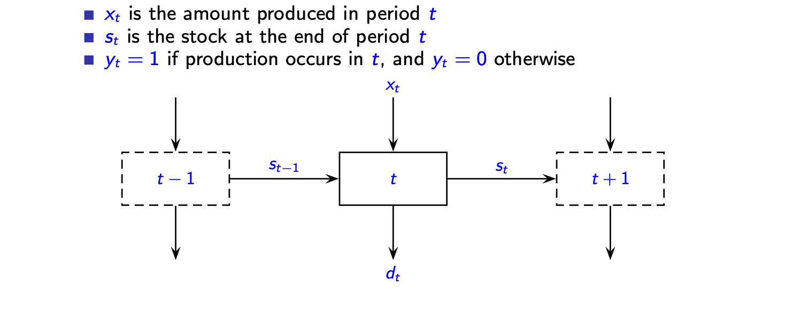
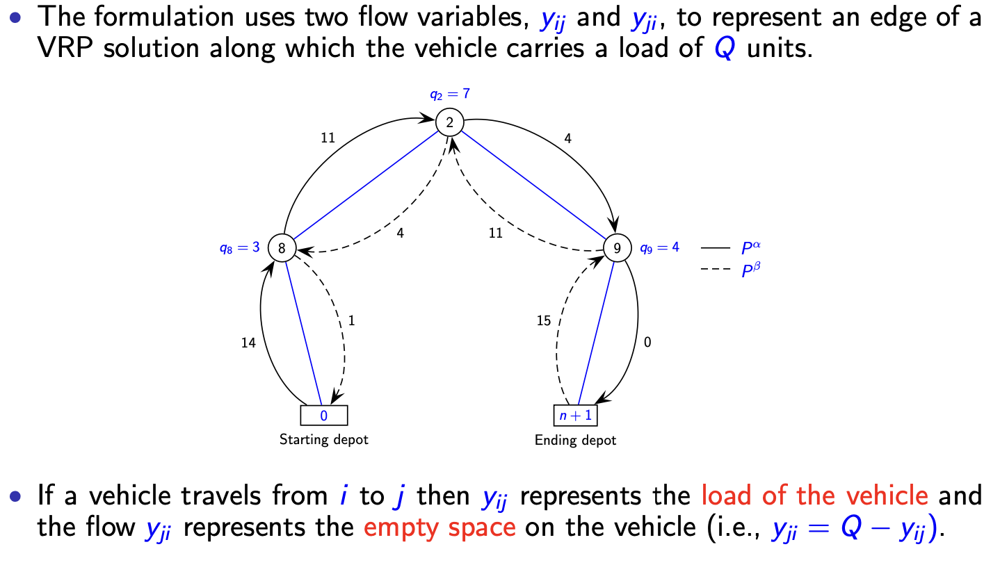

离散优化 Ch_04：替代建模方式¶
Summary
整数规划求解难在形式选择。本章揭示形式质量如何决定求解效率，详解扩展形式升维简化约束、投影消元生成紧界的重构技术，通过设施选址、批量问题、车辆路径三大案例演示理想形式的构建方法。
1. 替代形式概述 (Alternative Formulations)¶
核心概念¶
-
替代形式的性质：大多数整数规划（Integer Programming, IP）问题可以有多种建模方式。每种形式对应一个不同的多面体（polyhedron），该多面体包围着问题的可行整数点。
-
IP 与 LP 的区别：
- 在线性规划（LP）中，传统观点认为规模更大的形式（变量/约束更多）求解时间更长。
-
在整数规划（IP）中，这一传统观点不成立。形式的大小（size）并不决定求解难度。形式的质量（quality of formulation）才是关键。
-
评价标准：一个好的形式（"good" model）能够提供更紧的松弛（tighter relaxation），从而获得更好的下界，这对精确算法（exact algorithms）至关重要。
2. 整数规划的几何基础 (The Geometry of Integer Programming)¶
2.1 标准形式¶
整数线性规划（ILP）的标准形式为：
其中：
- \(A \in \mathbb{R}^{m \times n}\)：约束矩阵（constraint matrix）
- \(b \in \mathbb{R}^m\)：右端向量（right-hand side vector）
- \(c \in \mathbb{R}^n\)：费用向量（cost vector）
2.2 可行域与松弛¶
- 可行域：整数约束 \(x \in \mathbb{Z}_+^n\) 要求可行域仅由多面体内的整数坐标点构成。
- LP 松弛（Relaxation）：移除整数约束后，LP 提供一个分数解（fractional point）。
- 界的关系：LP 最优解为 ILP 最优值提供下界（lower bound），因为 LP 的可行域更大。
- 若 LP 解为整数，则该解对 ILP 也是最优的。
2.3 取整（Rounding）的局限性¶
重要结论
简单地取整（rounding）LP 松弛解并不能保证获得高质量的整数解。
原因：
- LP 最优解与 IP 最优解可能任意远（arbitrarily far away）。
- 取整可能导致不可行解（infeasible solution）。
- 即使可行，取整结果也可能远离最优（far from optimal）。
3. 重构（Reformulation）¶
3.1 重构的目标¶
重构（Reformulation）旨在获得更强的 LP 松弛（stronger LP relaxations），从而为精确算法提供更好的界（bounds）。
主要方法：
- 添加有效不等式（Valid Inequalities / Cutting Planes）—— 在 Lecture 5 讨论。
- 利用问题结构（Problem Structure）—— 在 Lecture 6 讨论。
- 扩展形式（Extended Formulations）：引入新变量以更好地建模问题结构。
3.2 数学表述¶
整数规划（IP）：
其中 \(X = P \cap \mathbb{Z}^n\)，且 \(P = \{x \in \mathbb{R}_+^n : A x \geq a\}\)。
混合整数规划（MIP）：
其中 \(X^M = P^M \cap (\mathbb{Z}^n \times \mathbb{R}^p)\)，且 \(P^M = \{(x,y) \in \mathbb{R}_+^n \times \mathbb{R}_+^p : Gx + Hy \geq b\}\)。
4. 多面体、形式与理想形式 (Polyhedra, Formulation and Ideal Formulation)¶
4.1 基本定义¶
定义 1：多面体 (Polyhedron)
多面体 \(P \subseteq \mathbb{R}^n\) 是有限个半空间的交集。即存在 \(A \in \mathbb{R}^{m \times n}\) 和 \(a \in \mathbb{R}^m\) 使得： $$ P = {x \in \mathbb{R}^n : A x \geq a} $$
定义 2：形式 (Formulation)
多面体 \(P\) 是集合 \(X\) 的一个形式，如果： $$ X = P \cap \mathbb{Z}^n $$ 即多面体与整数格的交集恰好是可行整数点集。
定义 3：凸包 (Convex Hull)
给定 \(X \subseteq \mathbb{R}^n\)，\(X\) 的凸包 \(\operatorname{conv}(X)\) 是包含 \(X\) 的最小闭凸集（smallest closed convex set containing \(X\)）。
4.2 形式的强弱比较¶
强形式 (Stronger Formulation)
若 \(P^1\) 和 \(P^2\) 都是 \(X\) 的形式，且 \(P^1 \subset P^2\)（严格包含），则称 \(P^1\) 比 \(P^2\) 更强（stronger）。
原因：对于任意 \(c \in \mathbb{R}^n\)，有：
即更强的形式提供更紧的下界。
4.3 理想形式（Ideal Formulation）¶
命题 1
整数集 \(X\)（或由有理数据定义的混合整数集 \(X^M\)）的凸包 \(\operatorname{conv}(X)\) 是一个多面体。
理想形式 (Ideal Formulation)
最强可能的形式由凸包 \(\operatorname{conv}(X)\) 提供： $$ z(c) = \min{cx : x \in \operatorname{conv}(X)} $$
实际限制：
- 描述 \(\operatorname{conv}(X)\) 通常需要指数级数量的不等式（exponential number of inequalities）。
- 通常没有简单的方法来刻画这些不等式。
5. 扩展形式 (Extended Formulation)¶
5.1 核心思想¶
通过引入新变量（new variables）将模型扩展到更高维空间，以更好地刻画问题结构。有时升维后约束更容易处理。
5.2 数学定义¶
定义 4：投影 (Projection)
给定集合 \(Q \subseteq \mathbb{R}^n \times \mathbb{R}^p\)，\(Q\) 在前 \(n\) 个变量 \(x = (x_1, \ldots, x_n)\) 上的投影定义为： $$ \operatorname{proj}_x(Q) = {x \in \mathbb{R}^n : \exists w \in \mathbb{R}^p \text{ with } (x, w) \in Q} $$
定义 5：扩展形式 (Extended Formulation)
多面体 \(P \subseteq \mathbb{R}^n\) 的扩展形式是一个多面体 \(Q = \{(x, w) \in \mathbb{R}^{n+p} : Gx + Hw \geq d\}\)，使得： $$ P = \operatorname{proj}_x(Q) $$
投影几何直观：高维集合 \(Q\) 在原始变量 \(x\) 上的投影 \(\operatorname{proj}_x(Q)\)，是仅保留 \(x\) 变量的低维可行域。
5.3 Minkowski 表示定理¶
假设：\(\operatorname{rank}(A) = n\)，这是 \(P\) 存在极值点（extreme points）的必要条件。
定理 1：Minkowski 表示定理
每个多面体 \(P = \{x \in \mathbb{R}^n : Ax \geq a\}\) 可表示为： $$ P = \left{x \in \mathbb{R}^n : x = \sum_{g \in G} \lambda_g x^g + \sum_{r \in R} \mu_r v^r, \sum_{g \in G} \lambda_g = 1, \lambda \in \mathbb{R}+^{|G|}, \mu \in \mathbb{R}+^{|R|} \right} $$ 其中： - \(\{x^g\}_{g \in G}\)：\(P\) 的极点（extreme points） - \(\{v^r\}_{r \in R}\)：\(P\) 的极方向（extreme directions）
解释：集合中的每一点都可表示为极点的凸组合（convex combination）加上极方向的非负线性组合。
示例¶
多面体 \(P = \{x \in \mathbb{R}_+^2 : 4x_1 + 12x_2 \geq 33, 3x_1 - x_2 \geq -1, x_1 - 4x_2 \geq -23\}\) 的扩展形式为：
其中：
- \(x^A = (33/4, 0)^T\)
- \(x^B = (21/40, 103/40)^T\)
- \(x^C = (19/11, 68/11)^T\)

5.4 整数规划的扩展形式¶
定义 6：IP 的扩展形式
对于整数点集 \(X \subseteq \mathbb{Z}^n\)，其扩展形式是一个多面体 \(Q \subseteq \mathbb{R}^{n+p}\)，使得： $$ X = \operatorname{proj}_x(Q) \cap \mathbb{Z}^n $$
Minkowski 定理的 IP 版本：
\(X\) 的扩展形式可写为：
其中 \(\{x^g\}\) 和 \(\{v^r\}\) 是 \(\operatorname{conv}(X)\) 的极点和极方向。
定义 7：紧扩展形式 (Tight Extended Formulation)
扩展形式 \(Q \subseteq \mathbb{R}^{n+p}\) 称为紧的（tight），如果： $$ \operatorname{proj}_x(Q) = \operatorname{conv}(X) $$ 即投影后恰好得到整数可行集的凸包。
5.5 扩展 IP 形式（Extended IP-formulation）¶
定义 8：扩展 IP 形式
扩展 IP 形式是集合 \(Q_I = \{(x, w^1, w^2) \in \mathbb{R}^n \times \mathbb{Z}^{p_1} \times \mathbb{R}^{p_2} : Gx + H^1 w^1 + H^2 w^2 \geq b\}\)，使得： $$ X = \operatorname{proj}_x(Q_I) $$ 其中部分新增变量 \(w^1\) 被限制为整数，而原变量 \(x\) 可能变为连续（或可消去）。
定理 2
每个 IP 集 \(X = \{x \in \mathbb{Z}^n : Ax \geq a\}\) 可表示为 \(X = \operatorname{proj}_x(Q_I)\)，其中： $$ Q_I = \left{(x, \lambda, \mu) \in \mathbb{R}^n \times \mathbb{Z}+^{|G|} \times \mathbb{Z}+^{|R|} : x = \sum_{g \in G} \lambda_g x^g + \sum_{r \in R} \mu_r v^r, \sum_{g \in G} \lambda_g = 1 \right} $$ 其中 \(\{x^g\}_{g \in G}\) 是 \(X\) 中有限个整数点，\(\{v^r\}_{r \in R}\) 是 \(\operatorname{conv}(X)\) 的极方向（缩放为整数）。
IP 扩展示例¶
对于 \(P = \{x \in \mathbb{R}_+^2 : 4x_1 + 12x_2 \geq 33, 3x_1 - x_2 \geq -1, x_1 - 4x_2 \geq -23\}\)，整数点集 \(X = P \cap \mathbb{Z}^2\) 的扩展 IP 形式为：
（注：此处根据图示，红点代表整数可行解的极点）。
5.6 线性变换与变量替换¶
对于某些扩展 IP 形式，存在线性变换 \(x = Tw\) 关联原变量 \(x\) 与新增变量 \(w\)。此时 IP 可重写为：
其中集合 \(W\) 提供了原变量 \(x\) 整数性的恰当表示。
6. 投影消元 (Projecting Out Variables)¶
6.1 核心思想¶
降维（Dimension Reduction）：通过消去（投影掉）部分变量，专注于更重要的变量子集，以减少计算复杂度。
应用场景：
- 减少变量数量以加速计算。
- 对扩展形式进行投影，在原始变量空间中获得紧界。
- 比较不同形式的 LP 松弛。
6.2 Farkas 引理¶
引理 1：Farkas' Lemma
给定 \(A \in \mathbb{R}^{m \times n}\) 和 \(a \in \mathbb{R}^m\)，多面体 \(\{x \in \mathbb{R}_+^n : Ax \geq a\} \neq \emptyset\) 当且仅当对所有满足 \(vA \leq 0\) 的 \(v \in \mathbb{R}_+^m\)，都有 \(va \leq 0\)。
6.3 投影定理¶
考虑 \(Q = \{(x, w) \in \mathbb{R}_+^n \times \mathbb{R}_+^p : Gx + Hw \geq d\}\)：
- \(x \in \operatorname{proj}_x(Q)\) 当且仅当 \(Q(x) = \{w \in \mathbb{R}_+^p : Hw \geq d - Gx\} \neq \emptyset\)。
定理 3：投影定理 (Projection)
设 \(Q = \{(x, w) \in \mathbb{R}^n \times \mathbb{R}_+^p : Gx + Hw \geq d\}\)，则： $$ \operatorname{proj}_x(Q) = {x \in \mathbb{R}^n : v(d - Gx) \leq 0, \forall v \in V} = {x \in \mathbb{R}^n : v^j(d - Gx) \leq 0, j = 1, \ldots, J} $$ 其中 \(V = \{v \in \mathbb{R}_+^m : vH \leq 0\}\) 是锥（cone），\(\{v^j\}_{j=1}^J\) 是 \(V\) 的极方向。
效果：投影消元减少了变量，但增加了约束条件（通过 Farkas 乘子生成）。
投影示例¶
给定多面体 \(Q = \{(x, y) \in \mathbb{R}_+^2 \times \mathbb{R}_+^3\)：
则 \(V = \{v \in \mathbb{R}_+^2 : -4v_1 - 12v_2 \leq 0, v_1 - 2v_2 \leq 0, -4v_1 + 4v_2 \leq 0\}\)。
极方向为 \(v^1 = (1, 1)^T\) 和 \(v^2 = (2, 1)^T\)。
投影结果为：
7. 替代形式案例 (Examples of Alternative Formulations)¶
7.1 无容量设施选址问题：添加约束 (Uncapacitated Facility Location Problem)¶
模型：
约束：
替代约束：约束 \((*)\) 等价于聚合约束 \(\sum_{i \in M} x_{ij} \leq m y_j\)（\(\forall j \in N\)）。
比较：
| 多面体 | 约束类型 | 强弱关系 |
|---|---|---|
| \(P_1\) | 聚合约束 \(\sum_{i \in M} x_{ij} \leq m y_j\) | 较弱 |
| \(P_2\) | 分离约束 \(x_{ij} \leq y_j\) | 较强 (\(P_2 \subset P_1\)) |
证明：
- 若 \((x,y)\) 满足 \(x_{ij} \leq y_j\)，则求和得 \(\sum_{i \in M} x_{ij} \leq m y_j\)。
- 反之不成立：设 \(m = kn\)（\(k \geq 2\)），令 \(x_{ij} = 1\) 对 \(i = k(j-1)+1, \ldots, k(j-1)+k\)，其余为 0，且 \(y_j = k/m\)。该点属于 \(P_1\) 但不属于 \(P_2\)。
结论：\(P_2\) 是更好的近似（更强的形式）。
7.2 无容量批量问题 (Uncapacitated Lot-Sizing Problem, ULSP)¶
问题是为单一产品确定一个 \(n\) 个周期范围内的生产计划。每个周期可以选择生产的数量，产品滞留到后续周期会产生库存成本。
参数：
| 符号 | 含义 |
|---|---|
| \(n\) | 计划期数 |
| \(f_t\) | 第 \(t\) 期固定生产成本 |
| \(p_t\) | 第 \(t\) 期单位生产成本 |
| \(h_t\) | 第 \(t\) 期单位库存成本 |
| \(d_t\) | 第 \(t\) 期需求 |
变量：
| 符号 | 含义 |
|---|---|
| \(x_t\) | 第 \(t\) 期生产量 |
| \(s_t\) | 第 \(t\) 期末库存（\(s_0 = s_n = 0\)） |
| \(y_t \in \{0,1\}\) | 第 \(t\) 期是否生产 |
生产 - 库存流转逻辑：第 \(t-1\) 期末库存 \(s_{t-1}\) + 第 \(t\) 期生产量 \(x_t\) = 第 \(t\) 期需求 \(d_t\) + 第 \(t\) 期末库存 \(s_t\)。

形式 a：标准形式 (ULSP-a)¶
（\(M\) 为足够大的常数）。
形式 b：扩展形式 (ULSP-b) —— 变量分裂技术¶
将 \(x_i\) 拆分为 \(w_{it}\)：第 \(i\) 期生产用于满足第 \(t\) 期需求（\(t \geq i\)）的量。
- \(x_i = \sum_{t=i}^n w_{it}\)
重构模型：
比较：
| 多面体 | 描述 | 强弱关系 |
|---|---|---|
| \(P_1\) | (ULSP-a) 的 LP 松弛多面体 | 较弱 |
| \(Q_1\) | (ULSP-b) 的 LP 松弛多面体 | 较强 |
| \(P_2 = \operatorname{proj}_{x,s,y}(Q_1)\) | 扩展形式投影回原空间 | 理想形式 |
关键结论：
- \(P_2 \subset P_1\)（严格包含）。反例：\(x_t = d_t, y_t = d_t/M\) 是 \(P_1\) 的极点但不在 \(P_2\) 中。
- \(Q_1\) 提供比 \(P_1\) 更好的下界。
- \(P_2\) 描述了解的凸包（convex hull of solutions），因此 (ULSP-b) 是理想形式（ideal formulation）。
7.3 容量约束车辆路径问题 (CVRP)：双商品流形式 (Two-commodity Flow Formulation)¶
思想：用两个流变量 \(y_{ij}\) 和 \(y_{ji}\) 表示同一条边 \(\{i,j\}\) 上的负载与空位。
网络构造：
| 符号 | 含义 |
|---|---|
| \(\overline{G} = (\overline{V}, \overline{E})\) | 扩展图，\(\overline{V} = V \cup \{n+1\}\) |
| \(V_c = \overline{V} \setminus \{0, n+1\}\) | 客户节点 |
| \(\overline{E} = E \cup \{\{i, n+1\}, i \in V_c\}\) | 扩展边集 |
| \(d_{i,n+1} = d_{0i}\) | 副本距离 |
变量：
| 符号 | 含义 |
|---|---|
| \(x_{ij} \in \{0,1\}\) | 边 \(\{i,j\}\) 是否在解中 |
| \(y_{ij}\) | 从 \(i\) 到 \(j\) 的负载流（实载） |
| \(y_{ji}\) | 从 \(j\) 到 \(i\) 的流（空载，\(y_{ji} = Q - y_{ij}\)） |

双商品流模型¶
约束：
双商品流物理含义：车辆从 \(i\) 到 \(j\) 时，\(y_{ij}\) 为实载流量，\(y_{ji}\) 为空载流量，满足 \(y_{ji}=Q-y_{ij}\)；depot 副本 \(n+1\) 用于完整刻画车辆往返流平衡。
与两指标形式比较¶
| 多面体 | 描述 |
|---|---|
| \(P_{TC}\) | 双商品流形式的 LP 松弛 |
| \(P_{TI}\) | 传统两指标形式（带容量割约束）的 LP 松弛 |
命题 2
\(P_{TC}\) 是 CVRP 的形式。
关系：
- \(z(P_{TI}) = z(P_{TC})\)（最优松弛值相等）。
- 存在一一对应关系。
- \(P_{TI} = \operatorname{proj}_x(P_{TC})\)：两指标形式是双商品流形式投影掉 \(y\) 变量后的结果。
扩展 IP 形式重写：
- 代入 \(x_{ij} = (y_{ij} + y_{ji})/Q\)。
- 添加整数约束：\(y_{ij} + y_{ji} \in \{0, Q\}\)（\(\forall \{i,j\} \in \overline{E}\)）。
8. 注释与参考文献 (Notes and References)¶
主要教材与文献¶
| 文献 | 内容 |
|---|---|
| Vanderbeck and Wolsey [7] | 描述整数和混合整数规划重构的可能方法 |
| Nemhauser and Wolsey [5] | 命题 1（Theorem 6.2）、rank 条件（Page 93）、定理 1（Theorem 4.8）、定理 2（Theorem 6.1）、Farkas 引理（Theorem 2.7）、投影定理（Theorem 4.10） |
| Bazaraa et al. [2] | 定理 1 的另一种表述（Theorem 2.1） |
| Bertsimas and Weismantel [3] | 第 1 章提供强形式的指导原则 |
| Pochet and Wolsey [6] | 第 7.4.2 节讨论无容量批量问题的扩展形式 |
| Baldacci et al. [1] | 提出 CVRP 的双商品流形式及投影结果 |
| Letchford and Salazar González [4] | 车辆路径问题的投影结果 |
参考文献列表¶
- Baldacci, R., Hadjiconstantinou, E., & Mingozzi, A. (2004). An exact algorithm for the capacitated vehicle routing problem based on a two-commodity network flow formulation. Operations Research, 52(5), 723–738.
- Bazaraa, M. S., Jarvis, J. J., & Sherali, H. F. (2010). Linear Programming and Network Flows (4th ed.). John Wiley & Sons.
- Bertsimas, D., & Weismantel, R. (2005). Optimization over integers. Athena Scientific.
- Letchford, A., & Salazar González, J. (2006). Projection results for vehicle routing. Mathematical Programming, 105(2–3), 251–274.
- Nemhauser, G. L., & Wolsey, L. A. (1988). Integer and combinatorial optimization. Wiley-Interscience.
- Pochet, Y., & Wolsey, L. A. (2006). Production Planning by Mixed Integer Programming. Springer.
- Vanderbeck, F., & Wolsey, L. (2010). Reformulation and decomposition of integer programs. In 50 Years of Integer Programming 1958-2008 (pp. 431–502). Springer.
本章总结¶
核心要点
- 重构质量：更紧的形式（更接近 \(\operatorname{conv}(X)\)）提供更优的 LP 界。
- 升维与降维：扩展形式通过增加变量简化约束结构，投影通过 Farkas 引理消元生成显式约束。
- 理想形式：如 ULSP 的变量分裂形式可精确刻画凸包，是求解的关键。